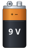
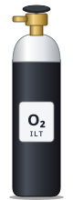
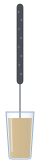
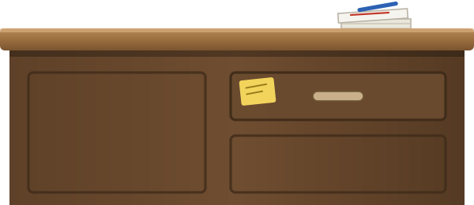
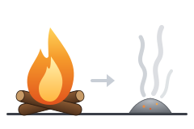
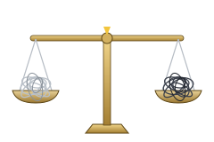
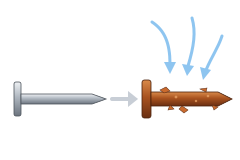

sc4.8: sprites i dobbelt størrelse

batteri.svg (ny)

iltflaske.svg (ny)

stjernekaster.svg (ny)
 vaegt.svg (som sc4.11)
vaegt.svg (som sc4.11)
 lup.svg (som sc4.11)
lup.svg (som sc4.11)

kateder.svg (som sc4.11)
Det gratis gæt

gaet_lettere.svg

gaet_samme.svg

gaet_tungere.svg